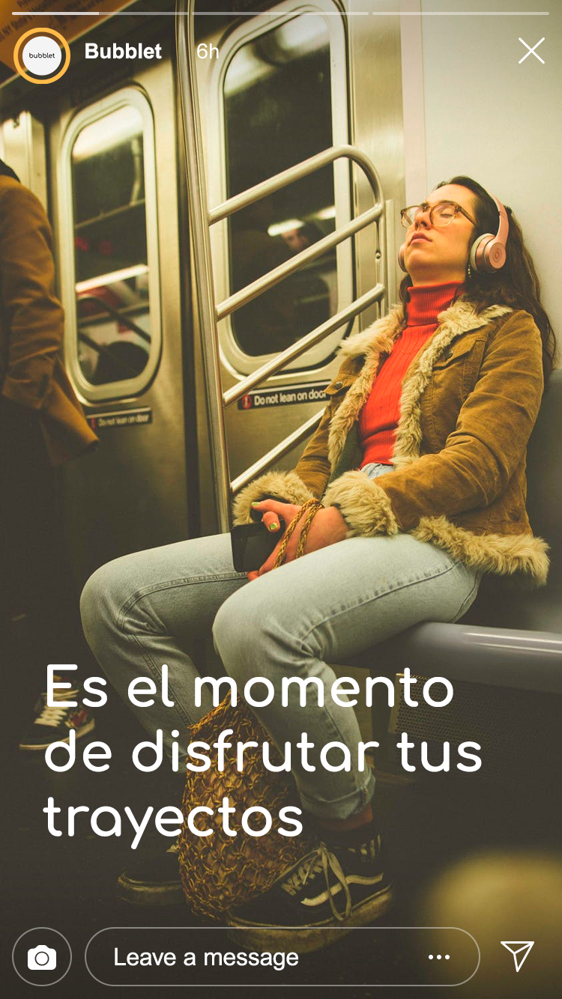
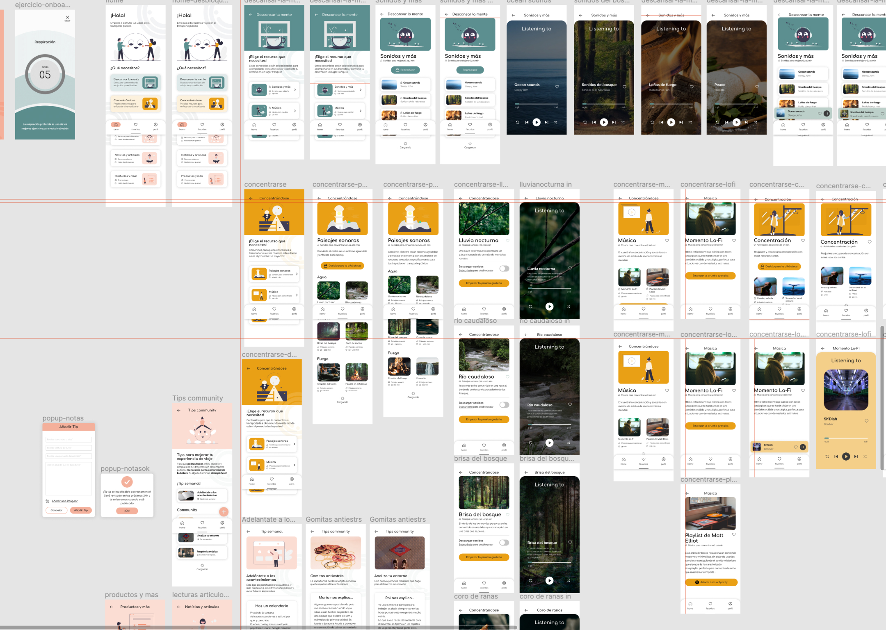
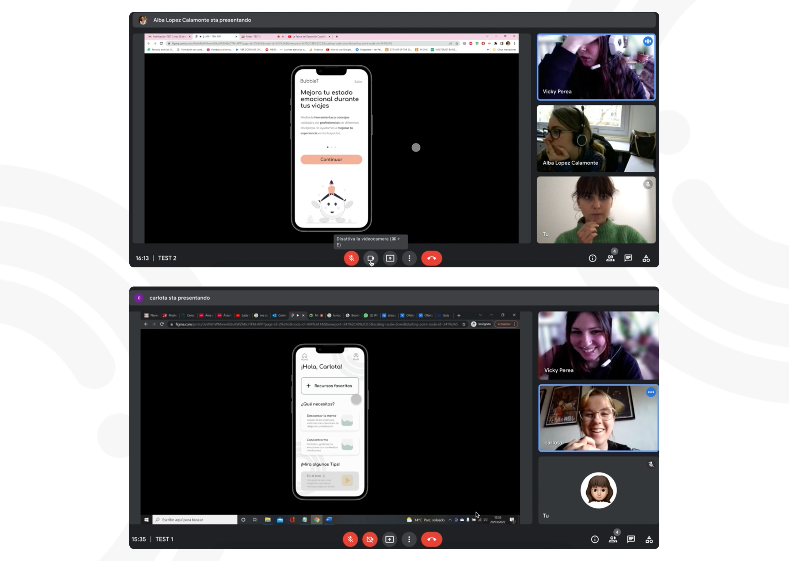
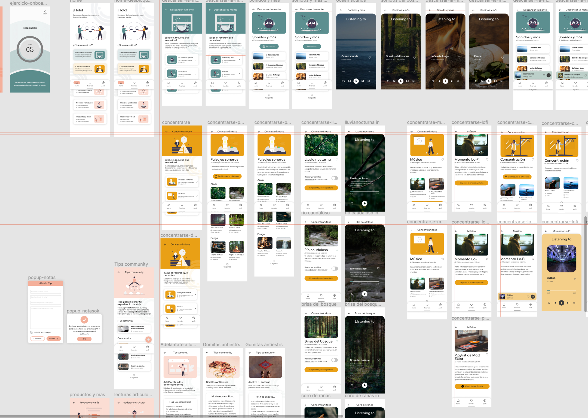
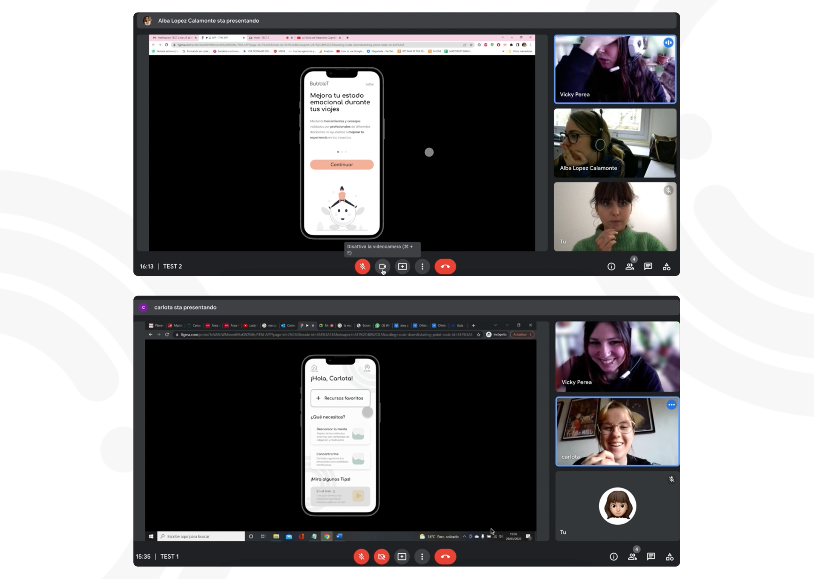
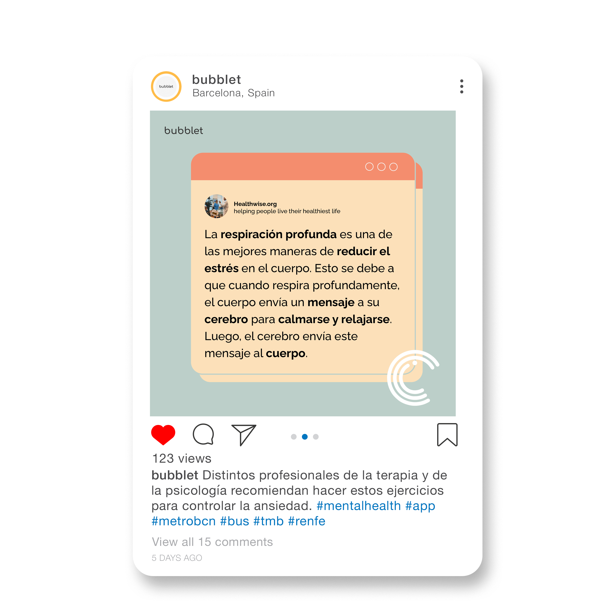
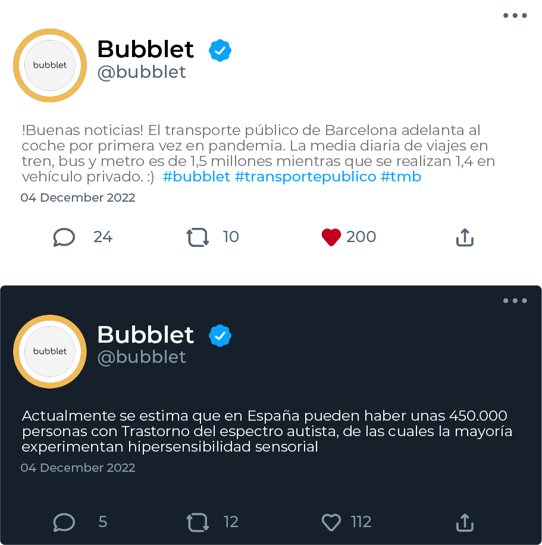
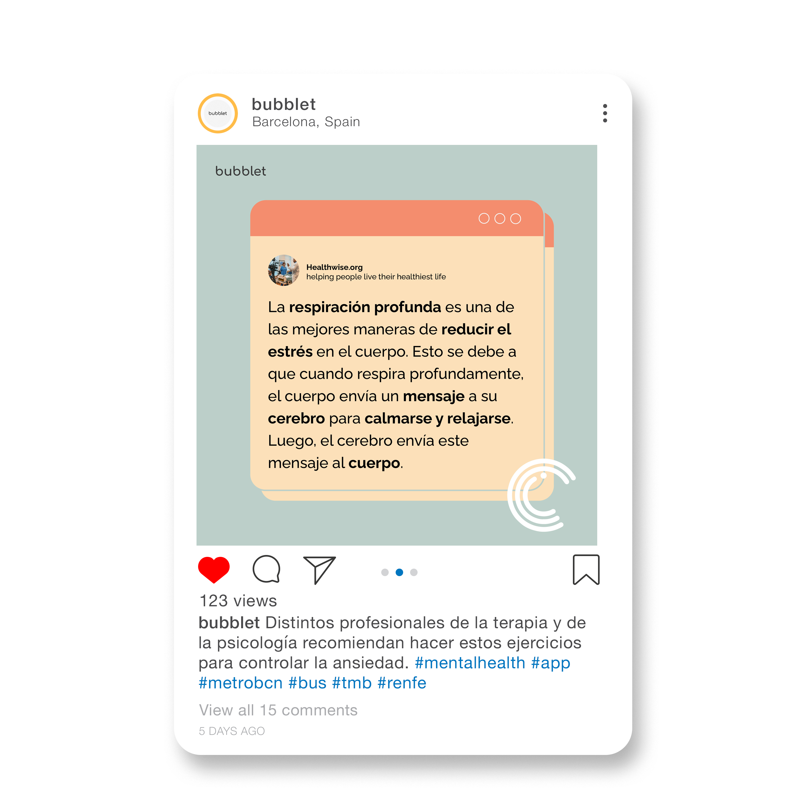
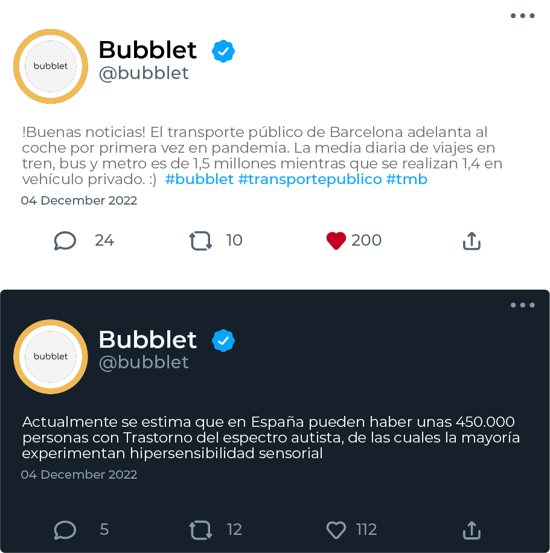

ABOUT
Bubblet's mission is to make public transport a better place that provides people with happiness, tranquility and well-being, even in those moments that may seem impossible.
Record your emotions in transport thanks to constant monitoring through a Smartwatch. If you don't have one, don't worry, you can use all the resources we offer you manually.
Manage your emotional state through the activities we suggest, as well as relaxation or concentration exercises and music to improve your travel experience.
In addition, we have created a community of Bubblers who share their experiences in public transport, to give you advice and never be alone.

THE PROBLEM
Due to Covid, the use of public transport has decreased considerably and, in turn, the level of anxiety in people has increased significantly.
And it is one of the reasons why many more people have begun to experience certain problems during their daily commute due to different disorders and conditions, in addition to the many people who already had difficulties on their journeys due to the sensory sensitivity, highly sensitive people, autism...
THE SOLUTION
Bubblet's mission is to make public transport a better place that provides people with happiness, tranquility and well-being, even in those moments that may seem impossible, With this app, we offer ways to enjoy the journeys, with resources, content, and creating community.


ROLE
Research - Benchmark -
User Persona -
UX / UI - Content -
Prototyping - Iterating
 




dark.jpg)
dark-1.jpg) 




Project by: Victoria Perea & Federica Corbetta